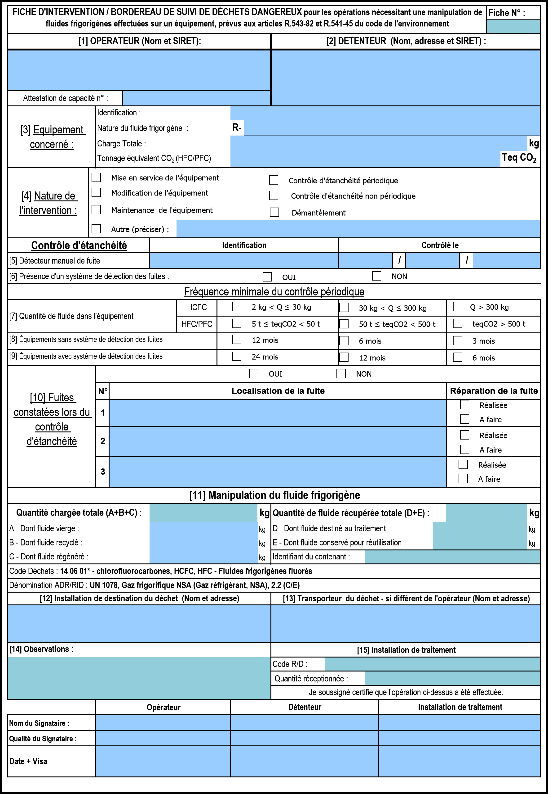

| NiveauCAP IFCA 2A |
Thème / DomaineCharger, mettre en service, tracer |
Module F4 · fil de l'eau · 2 h (au fil de A5-a et A5-b)Feuille de mise en service et CERFA |
SéquenceS14 · sem. 15-16 |
| Nom________________ |
Prénom________________ |
Classe________________ |
Positionnement
01234
|
Mise en situation professionnelle
Ordre d'intervention n° S14-F4-01 : vous intervenez comme technicien frigoriste sur la machine de
l'atelier pédagogique. Cette installation a été vidée et le fluide entièrement récupéré lors du module
précédent (S13) : le fluide est stocké, recyclé, dans une bouteille repérée. Pendant les modules
A5-a (chargement) et A5-b (contrôle et réglages), vous allez réintroduire ce fluide, mettre la
machine en service, relever vos mesures, et tracer toute l'intervention sur les documents officiels.
Sans ces documents correctement remplis, la machine ne peut pas être rendue au client.
MODE D'EMPLOI — ce document se remplit AU FIL DE L'EAU
Ce n'est pas un module à part : vous sortez ce support pendant les modules
atelier A5-a et A5-b, aux moments indiqués. Ne cherchez pas à tout remplir d'un coup en fin de séquence — les
valeurs les plus fiables sont celles notées au moment même de la mesure.
| Quand | Ce que vous remplissez |
|---|
| Début A5-a, avant la charge | Fiche d'identification de l'installation (feuille 1, ci-dessous) |
| Fin A5-a, juste après la charge et le démarrage | Relevé de mise en service (feuille 2) |
| Pendant A5-b, réglages | Calculs de contrôle SC/SR et décision (feuille 3) |
| Fin A5-b | CERFA / FI-BSD (feuille 4) et bon d'intervention (feuille 5) |
Rappel sécurité — Les EPI et les consignes de sécurité de la charge en
fluide (gants, lunettes, jamais de bouteille chauffée à la flamme, jamais de rejet à l'atmosphère) sont ceux
des modules A5-a et A5-b : ce support ne les répète pas en détail, il se remplit pendant que vous les
appliquez.
Fiche d'identification de l'installation — à remplir en premier
| Nom / repère de l'installation | Machine frigorifique — atelier pédagogique, poste n° |
| Marque | | Type | |
| Référence | | N° de série | |
| Nature du fluide | R | Type | ☐ HFC ☐ HFO ☐ HCFC ☐ CFC ☐ Naturel |
| Huile — nom / référence | | Quantité | L |
Renseignez-vous sur la plaque signalétique de
la machine et sur l'étiquette de la bouteille de fluide recyclé (module S13). Toute valeur absente de la
plaque : « selon notice constructeur, à faire valider ».
❄ inerWeb Édu — par F. Henninot · LPP Jacques Raynaud — Campus EQUATIO
créé le 09/07/2026 · © F. Henninot 2026 — diffusion pédagogique autorisée, mention de l'origine requise
LPP
JACQUES RAYNAUD
S14 · module F4 · CAP IFCA 2A — document élève
FIN DE A5-a — juste après la charge et le démarrage
Relevé de mise en service
Une ligne par grandeur. La valeur sans unité n'est pas un relevé valable.
Relevez au manomètre, au thermomètre de contact et à la pince ampèremétrique.
| Pressions et températures de saturation |
|---|
| Pression HP — Pk | bar |
| Température de condensation — T°k (abaque/diagramme du fluide) | °C |
| Pression BP — Po | bar |
| Température d'évaporation — T°o (abaque/diagramme du fluide) | °C |
| Températures mesurées (thermomètre de contact) |
|---|
| Θ refoulement compresseur | °C |
| Θ aspiration compresseur | °C |
| Θ sortie condenseur | °C |
| Θ sortie évaporateur | °C |
| Électrique et aéraulique |
|---|
| Intensité absorbée — compresseur | A |
| Intensité absorbée — ventilo-évaporateur | A |
| Sens de rotation ventilo-condenseur | ☐ Conforme ☐ Non conforme |
| Sens de rotation ventilo-évaporateur | ☐ Conforme ☐ Non conforme |
Question — Pourquoi relève-t-on la température de condensation ET de
saturation d'un côté, et une température mesurée directement au thermomètre de l'autre côté (sortie
condenseur, aspiration…) ? À quoi sert de comparer les deux ?
❄ inerWeb Édu — par F. Henninot · LPP Jacques Raynaud — Campus EQUATIO
créé le 09/07/2026 · © F. Henninot 2026 — diffusion pédagogique autorisée, mention de l'origine requise
LPP
JACQUES RAYNAUD
S14 · module F4 · CAP IFCA 2A — document élève
PENDANT A5-b — contrôle de la charge et réglages
Calculs de contrôle — surchauffe et sous-refroidissement
Rappel des formules (vues au module T1 de S11)
Surchauffe = Θ aspiration mesurée − T°o (saturation BP)
Sous-refroidissement = T°k (saturation HP) − Θ sortie condenseur mesurée
À partir de vos relevés de la feuille 2, calculez :
Surchauffe = = K
Sous-refroidissement = = K
Seuils autorisés — à comparer
Surchauffe normale :
5 à 10 K. Sous-refroidissement normal :
4 à 8 K.
Surchauffe : ☐ Dans la plage ☐ Hors plage
Sous-refroidissement : ☐ Dans la plage ☐ Hors plage
Décision — Si une valeur est hors plage, que faites-vous avant de
continuer ? (Ne cochez qu'après avoir réellement décidé avec votre professeur.)
☐ Valeurs conformes, rien à ajuster ☐ Complément de charge nécessaire
☐ Alerte professeur avant de continuer
Points de consigne de régulation
| Point de consigne de régulation | °C |
| Pbp — cut-in | bar |
| Pbp — différentiel | bar |
| Php sécu — cut-off | bar |
| Php sécu — différentiel | bar |
Ces valeurs de consigne sont selon plaque
signalétique / notice constructeur, à faire valider par le professeur : aucune valeur générale n'existe
pour un pressostat, contrairement aux seuils de surchauffe et sous-refroidissement ci-dessus.
Contrôle d'étanchéité du circuit chargé
| Méthode utilisée | ☐ Détecteur électronique ☐ Recherche visuelle / eau savonneuse |
| Points contrôlés | |
| Fuite détectée ? | ☐ Oui ☐ Non — si oui, localisation : |
❄ inerWeb Édu — par F. Henninot · LPP Jacques Raynaud — Campus EQUATIO
créé le 09/07/2026 · © F. Henninot 2026 — diffusion pédagogique autorisée, mention de l'origine requise
LPP
JACQUES RAYNAUD
S14 · module F4 · CAP IFCA 2A — document élève
FIN DE A5-b — vous tracez toute l'intervention
CERFA / FI-BSD — à remplir avec les valeurs relevées
Reportez vos propres relevés dans les champs ci-dessous, dans l'esprit du CERFA
officiel (image réduite ci-dessous, pleine page en annexe).

CERFA FI-BSD réel (n° 15497*02) — version pleine page en annexe.
| Traçabilité de la charge |
|---|
| Charge initiale (récupérée en S13, fluide recyclé) | kg |
| Complément apporté en A5-a | kg |
| Charge totale | kg |
| GWP / PRG du fluide | (selon tableau réglementaire officiel — voir module T1) |
| Tonne équivalent CO₂ de la charge | t CO₂e |
| Type de fluide manipulé | ☐ vierge ☐ recyclé ☐ régénéré ☐ destiné au traitement |
| Identifiant du contenant (bouteille) | |
| Identification |
|---|
| Nature de l'intervention | ☐ dépannage ☐ entretien ☐ mise en service ☐ récupération |
| Opérateur (nom + n° attestation d'aptitude) | |
| Détenteur de l'installation | Lycée Jacques Raynaud — atelier pédagogique |
| Date de l'intervention | |
Calcul du tCO₂e : =
La partie « bordereau de suivi de déchets »
n'est pas concernée ici : aucun fluide n'est destiné à la destruction ou au recyclage industriel ce jour
(le fluide recyclé est réintroduit dans la même machine).
❄ inerWeb Édu — par F. Henninot · LPP Jacques Raynaud — Campus EQUATIO
créé le 09/07/2026 · © F. Henninot 2026 — diffusion pédagogique autorisée, mention de l'origine requise
LPP
JACQUES RAYNAUD
S14 · module F4 · CAP IFCA 2A — document élève
Bon d'intervention
| Client | Lycée Jacques Raynaud — atelier pédagogique, 59 av. Charles Suzini, 13013 Marseille |
| Type d'intervention | ☐ Dépannage ☐ Entretien ☐ Mise en service |
| Technicien(ne) — nom, prénom | |
| Date | |
| Heure d'arrivée / de départ | / |
| Temps passé | |
Descriptif de la mission — décrivez en quelques lignes ce
que vous avez fait, dans l'ordre :
Observations / valeurs de réglage — notez tout ce qui sort de l'ordinaire
(réglage ajusté, complément de charge, anomalie) :
Auto-positionnement
Échelle FrigorX : 0 Non évalué · 1 Non acquis · 2 En cours
d'acquisition · 3 Acquis · 4 Parfaitement maîtrisé.
| Compétence | Ancrage | 0
Non évalué | 1
Non acquis | 2
En cours | 3-4
Acquis / maîtrisé |
|---|
| C1.1 Compléter, transmettre Confortement → Évaluation | sur T2·T15 · S1.2·S0.1 | Compétence non observée ce jour. | Documents incomplets ou illisibles malgré aide. | Documents remplis avec aide, quelques erreurs. | Feuille MES et CERFA complets, cohérents et exacts, en autonomie. |
| C4.5 Mesurer, comparer Confortement | sur T13·T14 · S5.1·S5.2 | Compétence non observée ce jour. | Relevés faux ou sans unité malgré aide. | Relevés justes avec aide, comparaison aux seuils partielle. | Relevés justes avec unité, SC/SR calculés et comparés seul aux seuils 5-10 K / 4-8 K. |
| Savoir-être | observation continue | Compétence non observée ce jour. | Valeurs inventées ou non relevées au bon moment. | Rigueur avec rappel du professeur. | Relève au fil de l'eau sans rappel, signale une valeur douteuse plutôt que de l'inventer. |
Mon auto-positionnement (avant correction professeur) :
C1.1 : 01234
C4.5 : 01234
Cette évaluation est remontée sur École
Directe : elle compte dans votre positionnement C1.1 et C4.5 de la période P7.
D'après : Feuille de
relevé de mise en service.docx, CERFA FI-BSD CAP.docx (F. Henninot).
❄ inerWeb Édu — par F. Henninot · LPP Jacques Raynaud — Campus EQUATIO
créé le 09/07/2026 · © F. Henninot 2026 — diffusion pédagogique autorisée, mention de l'origine requise
LPP
JACQUES RAYNAUD
S14 · module F4 · CAP IFCA 2A — annexe document élève
Annexe — CERFA FI-BSD réel (n° 15497*02), pleine page
Document de travail : gardez cette page
sous les yeux pour repérer les rubriques pendant que vous complétez la feuille 4.
D'après : CERFA FI-BSD CAP.docx (F. Henninot).
❄ inerWeb Édu — par F. Henninot · LPP Jacques Raynaud — Campus EQUATIO
créé le 09/07/2026 · © F. Henninot 2026 — diffusion pédagogique autorisée, mention de l'origine requise